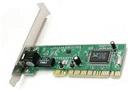
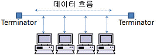
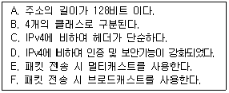

네트워크관리사-2급 (2013-10-20 기출문제)
1과목: TCP/IP
1. TCP/IP 계층과 OSI 7 Layer를 비교한 내용 중 옳지 않은 것은?
- TCP 프로토콜은 OSI 7 Layer의 전송계층에 해당한다.
- IP 프로토콜은 OSI 7 Layer의 네트워크계층에 해당한다.
- FTP는 OSI 7 Layer의 응용계층에 해당한다.
- HTTP 프로토콜은 OSI 7 Layer의 표현계층에 해당한다.
(정답률: 77%)

2. 응용 계층 수준에서 보안기능을 제공하는 프로토콜은?
- CA
- TLS
- IPSec
- SSH
(정답률: 93%)
3. NIC(Network Interface Card)에 대한 설명으로 옳지 않은 것은?

- NIC는 이더넷, 토큰링, FDDI와 같은 네트워크 형태에 따라 설계된 어댑터이다.
- OSI 7 Layer 중 전송 계층에서 사용된다.
- LAN 카드라 불리고 컴퓨터 내에 설치되는 확장카드이다.
- 대부분의 NIC에는 MAC(Media Access Control) 주소가 부여되어 있다.
(정답률: 84%)
4. FTP에 대한 설명 중 올바른 것은?
- 인터넷을 통해 파일을 송·수신하기 위한 프로토콜
- 인터넷 전자우편을 위한 프로토콜
- 하이퍼텍스트 문서를 전송하기 위한 프로토콜
- 원격접속을 하기 위한 프로토콜
(정답률: 85%)
5. IP Address의 Class에 대한 설명으로 올바른 것은?
- A Class 주소는 실제 128개의 네트워크에 할당할 수 있다.
- B Class는 IP Address에서 최상위 비트를 '10'으로 설정하고, 그 이후 총 2 Octet 까지 네트워크 ID로 사용한다.
- C Class 네트워크에서는 특별한 목적의 예약 주소를 제외하고 최고 256개의 호스트를 가질 수 있다.
- D Class는 앞으로 사용하기 위해 남겨둔 실험적인 범위이다.
(정답률: 79%)
6. ARP(Address Resolution Protocol)에 관한 설명으로 올바른 것은?
- 데이터 링크 계층에서 이용하는 하드웨어 주소를 IP주소로 맵핑하는 기능을 제공한다.
- ARP Cache는 IP Address를 하드웨어 주소로 맵핑한 모든 정보를 유지하고 있다.
- ARP Cache의 내용을 보기 위한 명령으로 arp명령을 이용하고 이때 옵션은 '-a' 이다.
- ARP가 IP Address를 알기 위해 특정 호스트에게 메시지를 전송하고 이에 대한 응답을 기다린다.
(정답률: 54%)
7. ICMP 프로토콜의 기능에 대한 설명 중 옳지 않은 것은?
- 모든 호스트가 성공적으로 통신하기 위해서 각 하드웨어의 물리적인 주소 문제를 해결하기 위해 사용된다.
- 네트워크 구획 내의 모든 라우터의 주소를 결정하기 위해 라우터 갱신 정보 메시지를 보낸다.
- Ping 명령어를 사용하여 두 호스트간 연결의 신뢰성을 테스트하기 위한 반향과 회답 메시지를 지원한다.
- 원래의 데이터그램이 TTL을 초과할 때 시간초과 메시지를 보낸다.
(정답률: 60%)
8. UDP에 대한 설명으로 옳지 않은 것은?
- UDP는 TCP에 비해 신뢰성이 떨어진다.
- UDP는 사용자 데이터그램(Datagram)이라고 하는 데이터 유닛을 송신지의 응용 프로세스에서 수신지의 응용 프로세스로 전송한다.
- UDP가 제공하는 서비스는 비연결형 데이터 전달 서비스(Connectionless Data Delivery Service)이다.
- UDP가 제공하는 오류검사는 홀수 패리티와 짝수 패리티가 있다.
(정답률: 75%)
9. Telnet을 이용하여 상대방 컴퓨터에 접속을 시도하려고 한다. 상대방 컴퓨터에게 일정한 데이터를 보내 상대방 컴퓨터의 정상 동작 여부를 확인하고 싶을 때 사용하는 명령어는?
- ping
- nslookup
- netstat
- finger
(정답률: 78%)
10. 인터넷의 잘 알려진 포트(Well-Known Port) 번호로 옳지 않은 것은?
- 23번 - FTP
- 25번 - SMTP
- 80번 - WWW
- 110번 - POP
(정답률: 74%)
11. SNMP에 대한 설명으로 옳지 않은 것은?
- TCP를 이용하여 신뢰성 있는 통신을 한다.
- 네트워크 관리를 위한 표준 프로토콜이다.
- 응용 계층 프로토콜이다.
- RFC 1157에 규정 되어 있다.
(정답률: 64%)
12. 라우트(Route) 프로토콜은 라우팅(Routing) 프로토콜과 라우티드(Routed)로 구분할 수 있다. 라우팅(Routing) 프로토콜이 아닌 것은?
- IGRP
- TCP/IP
- RIP
- OSPF
(정답률: 73%)
13. TCP(Transmission Control Protocol)에 대한 설명으로 옳지 않은 것은?
- 네트워크에서 송신측과 수신측간에 신뢰성 있는 전송을 확인한다.
- 연결지향(Connection Oriented)이다.
- 송신측은 데이터를 패킷으로 나누어 일련번호, 수신측 주소, 에러검출코드를 추가한다.
- 수신측은 수신된 데이터의 에러를 검사하여 에러가 있으면 스스로 수정한다.
(정답률: 84%)
14. IP Address '172.16.0.0'인 경우에 이를 14개의 서브넷으로 나누어 사용하고자 할 경우 서브넷 마스크 값은?
- 255.255.228.0
- 255.255.240.0
- 255.255.248.0
- 255.255.255.192
(정답률: 69%)
15. 아래 프로토콜 중 TCP/IP 계층 모델로 보았을 때, 나머지와 다른 계층에서 동작하는 것은?
- IP
- ARP
- RARP
- UDP
(정답률: 77%)
16. IP Address '11101011.10001111.11111100.11001111' 가 속한 Class는?
- A Class
- B Class
- C Class
- D Class
(정답률: 69%)
17. ipconfig는 TCP/IP 설정을 확인하는 유틸리티이다. 다음 중 이 유틸리티를 사용하여 확인할 수 있는 정보로 옳지 않은 것은?(단, ipconfig의 /all과 같은 파라미터는 사용하지 않는다.)
- IP Address
- DNS 서버
- 서브넷 마스크(Subnet Mask)
- 기본 게이트웨이(Default Gateway)
(정답률: 81%)
2과목: 네트워크 일반
18. 매 프레임 전송 시마다 일단 멈추고 응답이 오기를 기다리는 형태로, ACK 응답인 경우에는 다음 프레임을 전송하지만 NAK인 경우에는 다시 재전송하여 에러를 복구하는 에러 제어 방식은?
- continuous ARQ
- selective ARQ
- stop-and-wait ARQ
- Go-Back-N ARQ
(정답률: 74%)
19. LAN의 Topology 중, 아래 그림과 같이 공통 배선에 시스템의 모든 요소를 연결하는 방식은?

- 스타형
- 버스형
- 링형
- 결선형
(정답률: 91%)
20. 데이터링크 계층(Datalink Layer)에 대한 설명으로 옳지 않은 것은?
- 전송상에 발생하는 오류를 검출한다.
- 데이터의 표현형식을 변경한다.
- 전송상에 발생하는 오류를 정정한다.
- 비트들을 프레임으로 구성한다.
(정답률: 56%)
21. OSI 7 Layer 중 세션계층의 역할로 옳지 않은 것은?
- 대화 제어
- 에러 제어
- 연결 설정 종료
- 동기화
(정답률: 73%)
22. 정보 전송의 형태로 데이터 전송에 앞서 수신 시간을 얻도록 하는 방식으로, 송신측에서 동기부호를 사용하여 전송하는 방식은?
- 직렬 전송
- 병렬 전송
- 동기식 전송
- 비동기식 전송
(정답률: 80%)
23. 근거리 통신망의 전송방식 중 베이스밴드(Baseband) 방식의 특징은?
- 아날로그 전송방식
- 디지털 전송방식
- 단일채널의 데이터를 아날로그 신호로 변조하여 전송
- 단방향 통신
(정답률: 75%)
24. 데이터 전송 제어 절차로 올바른 것은?
- 회선 연결 --> 링크 설정 --> 데이터 전송 --> 링크 해제 --> 회선 해제
- 회선 연결 --> 링크 설정 --> 데이터 전송 --> 회선 해제 --> 링크 해제
- 링크 설정 --> 회선 연결 --> 데이터 전송 --> 링크 해제 --> 회선 해제
- 링크 설정 --> 회선 연결 --> 데이터 전송 --> 회선 해제 --> 링크 해제
(정답률: 85%)
25. 축적 전송방식의 일환으로 프레임의 수신과 CRC에러 확인 후 목적지로 전송하는 방식으로 프레임의 길이만큼 전달지연이 발생하는 LAN의 스위칭 방식은?
- Cut Throguh
- Store And Forward
- Call Together
- Store And Backward
(정답률: 74%)
26. IEEE 802 프로토콜의 연결이 올바른 것은?
- IEEE 802.3 : 토큰 버스
- IEEE 802.4 : 토큰 링
- IEEE 802.11 : 무선 LAN
- IEEE 802.5 : CSMA/CD
(정답률: 85%)
27. 아래 내용에서 IPv6의 일반적인 특징만을 나열한 것은?

- A, B, C, D
- A, C, D, E
- B, C, D, E
- B, D, E, F
(정답률: 87%)
3과목: NOS
28. Windows 2003 Server의 IIS Web Server 사이트에서 사용하는 디렉터리에 대한 설명 중 옳지 않은 것은?
- IIS 사이트의 등록되는 홈 디렉터리는 항상 로컬 컴퓨터의 하드디스크에 있는 디렉터리만 설정가능하다.
- 디렉터리 설정화면에 읽기/쓰기 등의 액세스 권한을 설정할 수 있다.
- 가상 디렉터리란 홈 디렉터리 내에 포함되어 있지 않는 어떤 디렉터리로 부터 퍼블리싱하기 위하여 사용한다.
- 홈 디렉터리 기본 위치는 '/inetpub/wwwroot'이다.
(정답률: 70%)
29. Windows 2003 Server의 DNS에 대한 설명 중 옳지 않은 것은?
- 클라이언트 컴퓨터는 DNS 서버 내의 리소스 레코드를 동적으로 업데이트 할 수 있다.
- 레코드의 에이징(Aging) 기능으로 무효(사용되지 않는)레코드를 방지한다.
- DHCP, WINS와 통합 운영이 가능하다.
- IIS(Internet Information Server) 관리 도구를 이용하여 설정이 가능하다.
(정답률: 55%)
30. TCP/IP의 수동 주소 할당에 따른 번거로움을 해소하기 위하여 호스트의 IP Address를 자동으로 할당하고 TCP/IP의 구성 정보를 중앙 집중적으로 관리하도록 하는 서비스는?
- DNS
- DHCP
- WINS
- ARP
(정답률: 78%)
31. Windows 2003 Server에서 랜카드에서 송수신한 패킷의 용량 및 종류를 확인할 수 있는 명령어와 옵션으로 올바른 것은?
- ipconfig -n
- netstat -r
- netstat -e
- ipconfig /all
(정답률: 48%)
32. Linux 시스템에서 사용자가 내린 명령어를 Kernel에 전달해주는 역할을 하는 것은?
- System Program
- Loader
- Shell
- Directory
(정답률: 87%)
33. Windows 네트워크의 NetBIOS 이름에 대한 IP Address를 제공하는 일종의 데이터베이스로서, 클라이언트가 NetBIOS 이름으로 서비스를 요청할 경우에 해당하는 IP를 응답해 주는 기능을 가진 서버는?
- DNS
- DHCP
- WINS
- SMTP
(정답률: 50%)
34. Windows 2003 Server가 감사하는 이벤트의 종류를 설명한 것 중 옳지 않은 것은?
- 정책 변경 : 사용자 보안옵션, 사용자 권한 또는 계정 정책이 변경되는 이벤트
- 시스템 이벤트 : Windows 2003 보안 및 보안 로그에 영향을 주는 이벤트
- 디렉터리 서비스 액세스 : 사용자가 도메인 컴퓨터 외에 로컬 컴퓨터의 파일, 폴더 또는 프린터에 액세스 하는 이벤트
- 권한 사용 : 시스템 시간 변경과 같은 사용자가 권한을 사용한 이벤트
(정답률: 50%)
35. Linux에서 사용되는 어플리케이션 및 환경 설정에 필요한 설정 파일들과 passwd 파일을 포함하고 있는 디렉터리는?
- /bin
- /home
- /etc
- /root
(정답률: 74%)
36. Windows 2003 Server 설치 도중에 파티션을 어떤 File System으로 포맷할 것인지를 결정해야 한다. Windows 2003 Server에서 기본적으로 지원하지 않는 File System은?
- NTFS
- FAT
- NFS
- FAT32
(정답률: 61%)
37. Linux 명령어의 tar의 Option 중에서 현재 작업 상황에 대한 정보를 표시하는 것은?
- z
- x
- v
- c
(정답률: 67%)
38. Linux 명령어 중 특정한 파일을 찾고자 할 때 사용하는 명령어는?
- mv
- cp
- find
- file
(정답률: 87%)
39. Linux 명령어 중 사용자 그룹을 생성하기 위해 사용되는 명령어는?
- groups
- mkgroup
- groupstart
- groupadd
(정답률: 75%)
40. Linux 시스템에서 사용되고 있는 메모리양과 사용 가능한 메모리 양, 공유 메모리와 가상 메모리에 대한 정보를 볼 수 있는 명령어는?
- mem
- free
- du
- cat
(정답률: 77%)
41. Bind 설정 파일 중 존(Zone) 파일은 여러 개의 레코드로 구분되어 설정된다. 각 레코드에 대한 설명으로 옳지 않은 것은?
- $TTL, SOA, NS, MX, A, CNAME 레코드 등으로 구분된다.
- SOA 레코드는 Start of Authority의 약자로 존 파일의 전체적인 설정이 시작됨을 나타낸다.
- $TTL은 특정 네임 서버가 질의하여 가져간 정보를 보관하고 있을 시간을 지정한다.
- MX 레코드는 호스트 이름에 대한 IP Address를 설정하기 위해 사용된다.
(정답률: 72%)
42. Linux에서 파티션 Type이 'SWAP' 일 경우의 의미는?
- Linux가 실제로 자료를 저장하는데 사용되는 파티션이다.
- Linux가 네트워킹 상태에서 쿠키를 저장하기 위한 파티션이다.
- 메모리가 부족할 경우 하드 디스크의 일부분을 마치 메모리인 것처럼 사용하는 파티션이다.
- Utility 프로그램을 저장하는데 사용되는 파티션이다.
(정답률: 84%)
43. Linux의 Redirection(리다이렉션)에 대한 설명으로 옳지 않은 것은?
- 어떤 명령의 결과 값을 원하는 위치로 출력하거나 어떤 명령의 입력 값을 원하는 위치로 받을 수 있다.
- '>' 기호를 중심으로 앞의 결과 값이 뒤에 나오는 파일이나 하드웨어 장치로 출력된다.
- '<' 기호를 중심으로 앞에 있는 파일이나 하드웨어 장치로부터 명령어를 입력받는다.
- '>>' 기호는 앞의 결과 값이 뒤에 나오는 파일로 출력되었을 경우 기존 파일의 내용을 덮어쓴다.
(정답률: 65%)
44. Linux와 다른 이기종의 파일 시스템이나 프린터를 공유하기 위해 설치하는 서버 및 클라이언트 프로그램은?
- 삼바(SAMBA)
- 아파치(Apache)
- 센드메일(Sendmail)
- 바인드(BIND)
(정답률: 85%)
45. 자신의 Linux 서버에 네임서버 운영을 위한 BIND Package가 설치되어 있는지를 확인해 보기 위한 명령어는?
- #rpm -qa l grep bind
- #rpm -ap l grep bind
- #rpm -qe l grep bind
- #rpm -ql l grep bind
(정답률: 62%)
4과목: 네트워크 운용기기
46. 장비간 거리가 증가하거나 케이블 손실로 인한 신호 감쇠를 재생시키기 위한 목적으로 사용되는 네트워크 장치는?
- Gateway
- Router
- Bridge
- Repeater
(정답률: 84%)
47. 광케이블에 대한 설명으로 옳지 않은 것은?
- 멀티 모드형과 싱글 모드형이 있다.
- 동축케이블과 마찬가지로 단선이 되었을 경우, 별도의 장비 없이 선을 연결하여 사용할 수 있다.
- 광섬유는 코어(Core)와 클래드(Clad)로 구성된다.
- 보안 및 잡음 등에 강한 것이 특징이다.
(정답률: 78%)
48. OSI 모델의 네트워크 계층에서 작동하는 네트워크 연결장치는?
- 브리지(Bridge)
- 라우터(Router)
- 리피터(Repeater)
- 게이트웨이(Gateway)
(정답률: 78%)
49. 경로 지정을 위해 'hop'을 사용하는 프로토콜은?
- SNA
- RIP
- TCP/IP
- OSPF
(정답률: 86%)
50. 게이트웨이(Gateway)의 역할로 올바른 것은?
- 전혀 다른 프로토콜을 채용한 네트워크 간의 인터페이스이다.
- 트위스트 페어 케이블 사용 시 이용되는 네트워크 케이블 집선 장치이다.
- 케이블의 중계점에서 신호를 전기적으로 증폭한다.
- 피지컬 어드레스의 캐시 테이블을 갖는다.
(정답률: 80%)